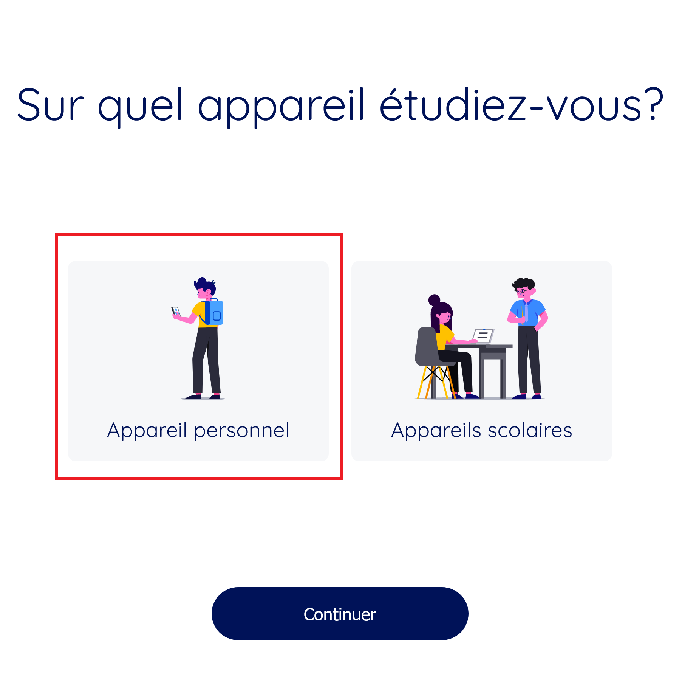
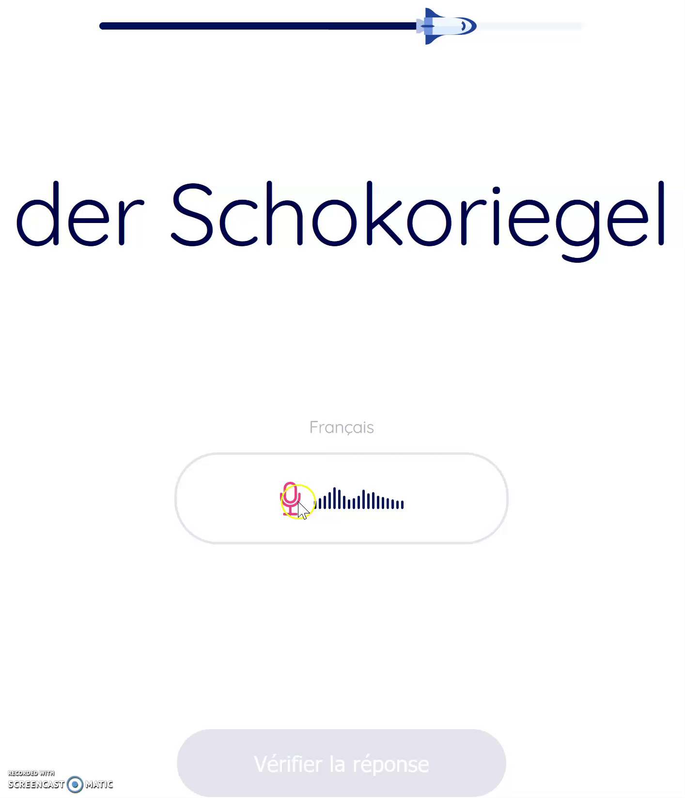

Questions générales
Questions techniques
Les notifications ne sont envoyées que lorsque vous utilisez la version mobile de l’application et indiquez que vous l’utilisez sur un appareil personnel. Pour indiquer que vous utilisez un appareil personnel, déconnectez-vous et reconnectez-vous. Après votre reconnexion, vous verrez l’écran illustré ci-dessous . Veillez à sélectionner ‘‘appareil personnel’’ pour permettre la réception des notifications. Les rappels pour la leçon en cours commencent à être envoyés après avoir effectué une première session avec l’application mobile.
Il est également possible que, malgré l’indication de l’utilisation d’un appareil personnel, vous ne receviez toujours pas de notification. Cela se produit, par exemple, lorsque vous utilisez un navigateur web pour accéder à l’application, que ce soit sur un ordinateur ou sur votre appareil mobile. C’est tout à fait normal car les notifications ne sont envoyées que si votre navigateur reste ouvert en permanence sur la page de l’application stellar-learning. Si vous souhaitez recevoir des notifications, nous vous conseillons d’utiliser l’application pour téléphone ou tablette. Vous pouvez les télécharger directement depuis l'App Store ou le Google Play store.
Pour utiliser le microphone de manière optimale sur une tablette ou un smartphone, procédez comme suit :
1. Appuyez sur la touche d’enregistrement et maintenez votre doigt dessus (à côté de l’image de micro)
2. Lorsque l’image du microphone commence à clignoter, attendez un instant et commencez à parler
3. Relâchez votre doigt après avoir terminé de parler, l’icône cesse de clignoter
Pour utiliser le micro de manière optimale sur ordinateur, procédez comme suit :
1. Cliquez une fois sur le bouton d’enregistrement (image de micro)
2. Lorsque l’image du microphone commence à clignoter, attendez un instant et commencez à parler
3. Cliquez à nouveau sur la touche d’enregistrement lorsque vous avez terminé de parler, l’icône cesse de clignoter
Vous pouvez également regarder l’animation ci-dessous pour une démonstration de l’utilisation du micro lorsque vous utilisez l’application avec un navigateur.
Questions relatives à des problèmes de connexions
Votre nom d’utilisateur et votre mot de passe sont sensibles à la casse. Cela signifie qu’ils doivent correspondre exactement à ce qui a été indiqué lors de votre inscription et respecter les majuscules et les minuscules. La présence d’un espace supplémentaire peut également rendre la connexion impossible. Par exemple, si votre identifiant est ‘‘tom1'‘et que vous saisissez ‘‘Tom1’’ (majuscule au lieu de minuscule sur le T) ou ‘‘tom 1’’ (espace supplémentaire entre ‘’m’’ et ‘‘l’'), vous ne pourrez pas vous connecter.
Si après avoir vérifié que votre nom d’utilisateur et votre mot de passe entrés sont ceux renseignés à l’inscription mais que vous n’arrivez toujours pas à vous connecter, contactez l’adresse projetscolaire@unidistance.ch pour redéfinir votre nom d’utilisateur et votre mot de passe.